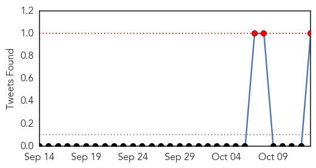
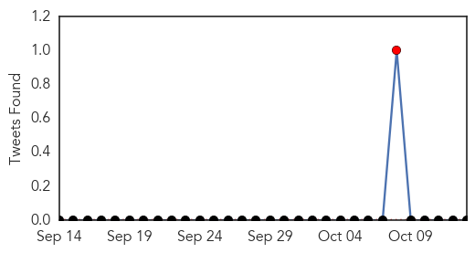
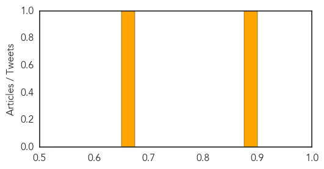

Swine Flu
30-Day Web Trend
5 alerts, 0 warnings

30-Day Twitter Trend
0 alerts, 0 warnings

Article Locations

Article Confidences

Top Articles:
- 1.000
- Swine flu kills 3 more in Pune, 810 H1N1 deaths in country
- 0.999
- Health Ministry affirms readiness to deal with H1N1 cases
- 0.995
- Bahrain dismisses rumour of swine flu outbreak
- 0.982
- Another dies of swine flu in Delhi
- 0.967
- Centre, Delhi govt confer how to tackle swine flu
- 0.890
- Union health ministry to issue guidelines on swine flu control
- 0.865
- Union health ministry to issue guidelines on swine flu control
- 0.832
- FDA to approve flu shot containing squalene which has been shown to cause severe autoimmune disorders -- Health & Wellness -- Sott.net
Top Tweets:
- 0.927
- RT: September saw 9 swine flu deaths http://t.co/u269ofEtSg India Maharashtra H1N1 influenza via
Pertussis
30-Day Web Trend
0 alerts, 0 warnings

30-Day Twitter Trend
1 alerts, 0 warnings

Article Locations

Article Confidences
Top Articles:
Top Tweets:
-
No tweets found for Oct 13, 2015